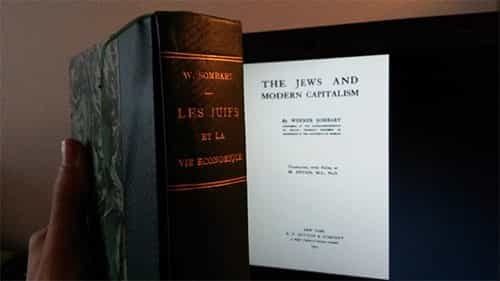
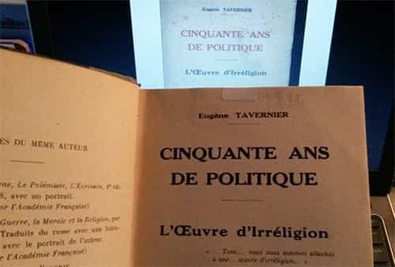
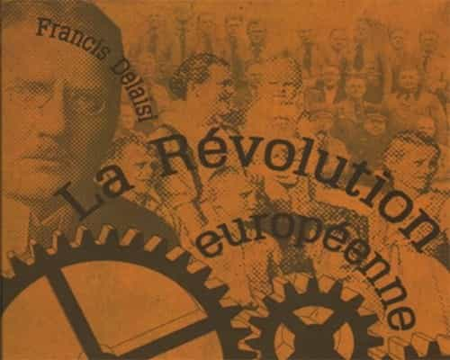

André is a young European who left his decaying country in 2012 for greener pastures. He enjoys exploring subterranean places, reading about a host of interconnected topics, and yearns for Tradition.


As said in a previous article, when it comes to politics and everything related, books written during the interwar period often stand out as the best reading. Before 1914, most essays tend to prefer prose or erudition to seriously tackling the issues they should ponder. From the 1930s onwards, but especially after the 1945+ purge and the 1960s offensive, the Left managed to take over the cultural life, shattering many interesting and even existential issues in the process.
By contrast, essays written between the two are the most interesting. Anxious about the present and future, the authors show willing to problematize fully the issues they tackle. Their books are polemical, sometimes openly whistleblowing, yet written in an atmosphere still free enough to go straight to the point.
Books mentioned last time approach a wide range of topics through interrogations such as the nature of modern civilization or the degeneration of man in modern times. Those mentioned here address narrower themes, and likely require some background to be fully appreciated.

OK, this one was published at the end of the Belle Époque and prior to Europe being covered by blood and shrapnel. However, most if not all of its translations, including two in English, reached the public after 1915, and the book is still republished today.
If you went through a liberal arts course, you may have heard about the sociologist Max Weber and his famous thesis on capitalism. “Protestant ethics”, Weber said, valued worldly success, hard work, and a kind of autonomy through the autonomous reading of the Bible that favored entrepreneurship. This mindset led many people to engage in entrepreneurship and work harder, thus unwittingly fostering the ascent of modern capitalism.
Sombart, a contemporary of Weber, agreed with him but looked farther. Namely, “the features of Puritan dogmas that really impacted on the genesis of capitalist spirit were but borrowed to Judaism.” Neither a classical liberal nor a socialist, neither pro- nor anti-Semitic, Sombart was an erudite and penetrating historian whose vision of modernity was truly brilliant.
According to him, there is a sharp contrast between the medieval European world and the world of Judaism. To Christians, the basis of economics and social order was subsistence: everyone had his own “field”, whether as a real parcel of land, trade or social function. Market prices had to be regulated so that each one’s interest could find an outlet in the general equilibrium. Jews, on the other hand, had a double set of standards: they showed mutual solidarity—tribalism—but considered the non-Jewish world as a free market. They also sanctified worldly gains and excelled in moneylending.
Jewish activity during the Middle Ages often caused harm to Christian merchants, peasants, and craftsmen, but was also favorable to someone else’s interests. In the late Middle Ages, Jews became important army suppliers. When power-hungry kings smashed the nobility, destroyed fortresses, curtailed the corporations’ specific prerogatives, and carried on expensive wars, they needed able managers, fresh money and military assets. Jews, thanks to their huge transnational networks and trade abilities, responded to the call—and when the kings fell, thanks to their own hubris, their suppliers and moneylenders stayed.
Meanwhile, as Jews were attracting capital and conquering more and more important positions in society, they soaked the West with their own peculiar mindset. For example, Jews tend to be urbane, to have a high IQ and a lack of sense of concreteness: this set of features helped them to contribute goods as abstract things, through the prism of quantity. Jews then played an important role in turning the economy into a big stock exchange, where actual goods became a support—or a pretext—to trade obligations and financial products. Moneylending went from the outskirts of the economy to its heart.
Just like Evola’s Revolt against the modern world, Sombart’s book cannot be adequately summed up in a few paragraphs. It gives an impressive big picture of modernity, economics, and Judaism. A major complement to Kevin MacDonald’s well-known books on said topic.

I hesitated before mentioning this one. It hasn’t been translated in English and speaks mainly about French history. What makes it relevant is the insight it gives into how organized forces of leftward pushing act in general.
A retired journalist, Eugène Tavernier wrote this book as a shrewd testimony of what he had seen for decades. 50 Years of Politics gives both an overview and an analysis of a long-winded, concerted effort from the secularist Left to rip Catholicism from the French.
The effort spanned on decades and spread up on various fields of public life. In law, the Republic—born by ransacking churches, decapitating political opponents and bathing in the blood of faithful peasants—legalized divorce, created harsh conditions for Catholic seminaries and institutions, forcefully secularized schools, and finally claimed the ownership of the cult places in 1905.
In the academia and “high culture”, Tavernier portrays various intellectuals who, although some of them were really astute, were all unhinged minds, and all united to scorn Catholicism. Especially interesting is the portrayal of Edgar Quinet (1803-1875), a Freemason and radical republican who posed as a moderate “man of letters” but showed a relentless hatred of his ancestors’ religion:
He demanded that laws be secularized; he defined new ideas and used formulas that became the thought, rule, and language of our secular world, both official and private… Eventually, Quinet explained with pleasure what he meant by secularizing the laws: he wanted, “by the means of new laws”, struggle against national beliefs, as to create a new French people uprooted from Catholicism. [In 1850] this prophet of toleration pressured the freethinkers to impose their ideas through force… (pp.98-99)
Under the pretext of erudite exegesis, Quinet greatly contributed to the republishing of an ancient Protestant writer whose main, if not only, quality consisted in attacking “papism” vehemently.
Tavernier also mentions how the Grand Orient de France, the main French masonic obedience, repeatedly contributed to uniting and coordinating the irreligious, pushed for the erasure of religious references from most social institutions, and was constantly implicated in underhanded manipulations such as diverting public money or spying army officers.
The reader does not need to be a Catholic to see the relevance of this book: its topic bears a strange analogy with today’s multiculturalists and SJWs. To better face the beast today, look at how it behaved in the past, at an earlier stage.

Many contemporary books about the Great Depression are written by Keynesian economists. The view they give is thus biased in favor of a particular managerialism—among many others possible—that insists way too much on spending, justifies unduly authority from pompous academics, and lead to massive inflation and debt.
Francis Delaisi’s European Revolution defends economic managerialism, but is by no means Keynesian, and contains very few gibberish. Writing after the “economic renaissance” of 1930s Germany, it compares the failure of the “liberal” economy determined by private banking with National Socialists’ rather innovative policies. The success of the latter model, Delaisi confidently adds, can free Europe from the shackles of Wall Street speculation, hence the book title.
After 1918, US bankers found themselves almost overloaded with European gold. Exhilarated by the power between their hands, they started investing in most of the West and beyond. Their massive investments created many employments, production soared both in the US and abroad, giving birth to what would be eventually called the Roaring Twenties. But as time passed, it became clear—to finance initiates at least—that bankers were abusing from the leverage effect to create dollars out of thin air thanks to bookkeeping. Financial economy was slowly drifting away from real production and real consumption possibilities.
A bubble was forming. American government tried to avoid its bust, especially on wheat stocks, this cereal being then overproduced, by investing half a billion dollars on supporting wheat prices in 1929. These efforts failed, Delaisi recounts, mostly because of the short view and cynical opportunism of the main actors. Farmers, instead of reducing their production, increased it: if government was supporting the prices, they could sell more and thus earn more money instead of tightening their belts. Big transportation industry, also, disliked the government intrusion into what they considered their exclusive territory, and they managed to flood the European wheat markets by a sophisticated game of delivering too much on the same markets and toying with their own margins until the stocks crashed.
Here, it seems that capitalism, understood as the will to live thanks to one’s capital instead of honest productive work, led both producers and sellers to get out of their place. Each actor tried to squeeze the situation for his own benefit and/or maintain an unwarranted income. Their short-term policies hastened the bursting of the bubble—and many of those who thought they could speculate as well were left naked on the sand.
Beyond the mentality problem, Delaisi sees in nineteenth-century and beyond capitalism a glaring issue: it gives an unreasonable advantage to sellers. Universal gold standard, along with globalization, allow to buy anything in any place where production costs are cheap and sell it where said costs are higher, to the expense of local producers.
With 100g of gold, an international trust could buy in 1937: 4 weeks of work from an American factory worker, 20 weeks from a French one, 23 weeks from an Italian one, and 37 weeks from a Japanese one… The whole world was astonished when Czechoslovakia received Japanese socks and watches which were sold per kilo at a cheaper price than those produced nearby. (chap.9, p.142)
Unregulated competition means producers have to lower their prices and life standards to match someone else’s slave work. If they can’t, they are reduced into joblessness. Sounds familiar?
When Hitler was appointed Chancellor in 1933, Germany had been bled dry and unemployment was rampant. His economic policy was interventionist and high-energy. Germany rejected the gold standard for the “work standard”, reopened factories, asserted that the German producer’s interest was legitimate against international speculation. Government stabilized the value of money and basic commodities, thus protecting the people from stock jobbing. They borrowed from their own people instead of going to foreign banks… And guess what? It worked. People were rationed at first, but life conditions greatly improved. Too bad the New Deal admirers never talk about this one.
Seems, then, a planned economy can work—if and only if crucial requirements are met. People participating there should identify with the common good, be disciplined and OK with being more or less taught what to do, and should be able to do the required job. Failure to meet these conditions explain why so many socialist attempts broke down.
The European Revolution, of course, explains the workings of both pre-1930 capitalism and National Socialist managerialism with much more detail than I did. A shame that it hasn’t (yet?) been translated in English.
Academic explanations of reality are at best limited by political correctness, at worst bound to spread falsehoods and smears. Weber’s thesis about “Protestant ethics” has been so much mentioned it became a trite, classical liberals are still criticized as well, but why is no one speaking about Sombart’s work aside from carefully closeted research departments? Possibly, the scope with which it extends outside the “muh persecutions muh Holocaust” narrative makes the average liberal teacher uncomfortable.
Likewise, the historical trend towards secularism and atheism is often casually mentioned as if it had happened spontaneously, whereas a closer look shows that it was the result of a relentless cultural war fought by generations of institutionalized far-Leftists. Many so-called classics of today were yesterday’s SJWs.
Understanding where we come from and what really happened requires unplugging from the post-1945 cultural Marxist matrix. Fortunately, thanks to all the free eBooks around and a thriving ancient books market, this has never been easier.
Read Next: How The Global Financial Market Mirrors The Sexual Marketplace